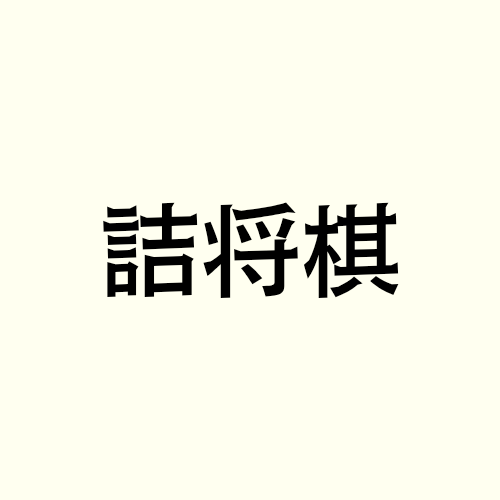
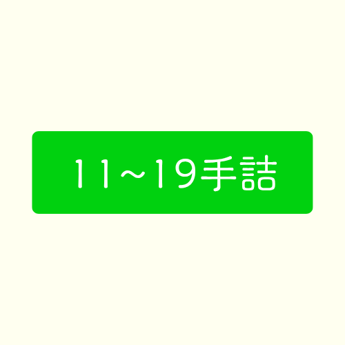

ホーム
活動報告
創作詰将棋
部について
お問い合わせ


〝備考〟
・このページに掲載されている詰将棋には、制作者が「スマホ詰将棋パラダイス」で同様の作品を投稿している場合があります。
・余詰確認には詰将棋ソフト「背尾詰」を、同一作確認には「詰将棋同一作検索ページ」を使用しています。
＊リンク
https://www.kukiminsho.com/tdb/searches/
・詰将棋に関する質問、不備の指摘、アドバイスは「お問い合わせ」ページにて承ります。
・詰将棋の画像生成には「Shogipic」を使用しています。